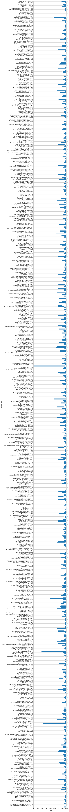
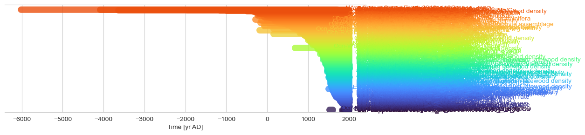
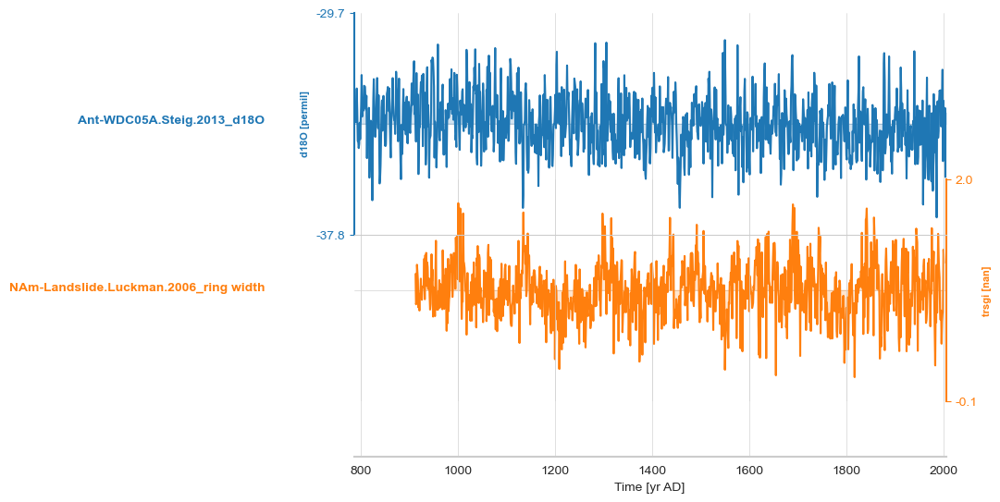

Correlating two GeoSeries#
This notebook performs a small analysis: computing correlation between two GeoSeries.
import json
import requests
import pandas as pd
import io
import ast
import pyleoclim as pyleo
url = 'https://linkedearth.graphdb.mint.isi.edu/repositories/LiPDVerse-dynamic' # version this to avoid breaking changes (5?)
url_d = {'{le_var}':'http://linked.earth/ontology/paleo_variables#','{wgs84}':'http://www.w3.org/2003/01/geo/wgs84_pos#','{le}':'http://linked.earth/ontology#','{rdfs}':'http://www.w3.org/2000/01/rdf-schema#'}
query ="""
PREFIX le: <{le}>
PREFIX le_var: <{le_var}>
PREFIX wgs84: <{wgs84}>
PREFIX rdfs: <{rdfs}>
SELECT DISTINCT
?dataSetName ?archiveType ?geo_meanLat ?geo_meanLon ?geo_meanElev
?paleoData_variableName ?resolution ?paleoData_units ?paleoData_values ?time_values
?paleoData_proxy ?paleoData_proxyGeneral
?time_variableName ?time_units ?maxTime ?minTime
?compilationName ?TSID
?startDate ?endDate
WHERE {
?ds a le:Dataset .
?ds le:hasName ?dataSetName .
OPTIONAL {
?ds le:hasArchiveType ?archiveTypeObj .
?archiveTypeObj rdfs:label ?archiveType .
}
?ds le:hasLocation ?loc .
OPTIONAL {?loc wgs84:lat ?geo_meanLat .}
OPTIONAL {?loc wgs84:long ?geo_meanLon .}
OPTIONAL {?loc wgs84:alt ?geo_meanElev .}
?ds le:hasPaleoData ?data .
?data le:hasMeasurementTable ?table .
?table le:hasVariable ?var .
?var le:hasName ?paleoData_variableName .
?var le:hasValues ?paleoData_values .
OPTIONAL {
?var le:hasUnits ?paleoData_unitsObj .
?paleoData_unitsObj rdfs:label ?paleoData_units .
}
OPTIONAL {
?var le:hasProxy ?paleoData_proxyObj .
?paleoData_proxyObj rdfs:label ?paleoData_proxy .
}
OPTIONAL {
?var le:hasProxyGeneral ?paleoData_proxyGeneralObj .
?paleoData_proxyGeneralObj rdfs:label ?paleoData_proxyGeneral .
}
?var le:partOfCompilation ?compilation .
?compilation le:hasName ?compilationName .
VALUES ?compilationName {"Pages2kTemperature"} .
?var le:useInGlobalTemperatureAnalysis True .
OPTIONAL { ?var le:hasVariableId ?TSID }
?table le:hasVariable ?timevar .
?timevar le:hasName ?time_variableName .
?timevar le:hasStandardVariable le_var:year .
?timevar le:hasValues ?time_values .
?timevar le:hasMinValue ?minTime .
?timevar le:hasMaxValue ?maxTime .
OPTIONAL{
?timevar le:hasUnits ?time_unitsObj .
?time_unitsObj rdfs:label ?time_units .
}
}
"""
def update_urls(query, url_d):
for key, value in url_d.items():
query = query.replace(key, value)
return query
query = update_urls(query, url_d)
response = requests.post(url, data = {'query': query})
data = io.StringIO(response.text)
df = pd.read_csv(data, sep=",")
df.head()
| dataSetName | archiveType | geo_meanLat | geo_meanLon | geo_meanElev | paleoData_variableName | resolution | paleoData_units | paleoData_values | time_values | paleoData_proxy | paleoData_proxyGeneral | time_variableName | time_units | maxTime | minTime | compilationName | TSID | startDate | endDate | |
|---|---|---|---|---|---|---|---|---|---|---|---|---|---|---|---|---|---|---|---|---|
| 0 | Ant-WDC05A.Steig.2013 | Glacier ice | -79.46 | -112.09 | 1806.0 | d18O | NaN | permil | [-33.32873325, -35.6732, -33.1574, -34.2854, -... | [2005, 2004, 2003, 2002, 2001, 2000, 1999, 199... | d18O | NaN | year | yr AD | 2005.0 | 786.0 | Pages2kTemperature | Ant_030 | NaN | NaN |
| 1 | NAm-MtLemon.Briffa.2002 | Wood | 32.50 | -110.80 | 2700.0 | MXD | NaN | NaN | [0.968, 0.962, 1.013, 0.95, 1.008, 0.952, 1.02... | [1568, 1569, 1570, 1571, 1572, 1573, 1574, 157... | maximum latewood density | NaN | year | yr AD | 1983.0 | 1568.0 | Pages2kTemperature | NAm_568 | NaN | NaN |
| 2 | Arc-Arjeplog.Bjorklund.2014 | Wood | 66.30 | 18.20 | 800.0 | density | NaN | NaN | [-0.829089212152348, -0.733882889924006, -0.89... | [1200, 1201, 1202, 1203, 1204, 1205, 1206, 120... | maximum latewood density | NaN | year | yr AD | 2010.0 | 1200.0 | Pages2kTemperature | Arc_060 | NaN | NaN |
| 3 | Asi-CHIN019.Li.2010 | Wood | 29.15 | 99.93 | 2150.0 | trsgi | NaN | NaN | [1.465, 1.327, 1.202, 0.757, 1.094, 1.006, 1.2... | [1509, 1510, 1511, 1512, 1513, 1514, 1515, 151... | ring width | NaN | year | yr AD | 2006.0 | 1509.0 | Pages2kTemperature | Asia_041 | NaN | NaN |
| 4 | NAm-Landslide.Luckman.2006 | Wood | 60.20 | -138.50 | 800.0 | trsgi | NaN | NaN | [1.123, 0.841, 0.863, 1.209, 1.139, 1.056, 0.8... | [913, 914, 915, 916, 917, 918, 919, 920, 921, ... | ring width | NaN | year | yr AD | 2001.0 | 913.0 | Pages2kTemperature | NAm_1876 | NaN | NaN |
df['paleoData_values']=df['paleoData_values'].apply(lambda row : json.loads(row) if isinstance(row, str) else row)
df['time_values']=df['time_values'].apply(lambda row : json.loads(row) if isinstance(row, str) else row)
import matplotlib.pyplot as plt
def plot_time_coverage(
df,
label_col: str = "dataSetName",
time_col: str = "time_values",
figsize=(8, None)
):
"""
Plot a horizontal bar for each row in df showing its time coverage.
Parameters
----------
df : pandas.DataFrame
Must contain:
- df[label_col]: categorical labels
- df[time_col]: iterable of numeric times
label_col : str
Name of the column with category labels.
time_col : str
Name of the column with sequence of time values.
figsize : tuple
Figure size; if height is None it will be computed from number of rows.
"""
# Compute starts and ends
starts = df[time_col].apply(min)
ends = df[time_col].apply(max)
durations = ends - starts
n = len(df)
height = figsize[1] or max(1, 0.15 * n)
fig, ax = plt.subplots(figsize=(figsize[0], height))
y_pos = range(n)
ax.barh(y=y_pos, width=durations, left=starts)
ax.set_yticks(y_pos)
ax.set_yticklabels(df[label_col])
ax.set_xlabel("Time")
ax.set_ylabel(label_col)
ax.set_ylim(min(y_pos) - 0.5, max(y_pos) + 0.5)
ax.invert_yaxis() # so the first row is at the top
plt.tight_layout()
return fig, ax
fig, ax = plot_time_coverage(df, label_col='dataSetName', time_col='time_values')

ts_list = []
for _, row in df.iterrows():
geo_series = pyleo.GeoSeries(time=row['time_values'],value=row['paleoData_values'],
time_name=row['time_variableName'],value_name=row['paleoData_variableName'],
time_unit=row['time_units'], value_unit=row['paleoData_units'],
lat = row['geo_meanLat'], lon = row['geo_meanLon'],
elevation = row['geo_meanElev'],
archiveType = row['archiveType'],
observationType=row['paleoData_proxy'],
label=row['dataSetName']+'_'+row['paleoData_proxy'], verbose = False)
ts_list.append(geo_series)
fig, ax = pyleo.MultipleGeoSeries(ts_list).time_coverage_plot(label_y_offset=-.08) #Fiddling with label offsets is sometimes necessary for aesthetic

small_set = [ts_list[0], ts_list[4]]
ms = pyleo.MultipleGeoSeries(small_set)
ms.stackplot();

bounds =[max([gs.time.min() for gs in small_set]),
min([gs.time.max() for gs in small_set])]
gs1 = ts_list[0].sel(time=slice(bounds[0], bounds[-1]))
# gs1 = gs1.convert_time_unit('ky BP')
gs1.plot()
(<Figure size 1000x400 with 1 Axes>,
<Axes: xlabel='Time [yr AD]', ylabel='d18O [permil]'>)
gs2 = ts_list[4].sel(time=slice(bounds[0], bounds[-1]))
# gs2 = gs2.convert_time_unit('ky BP')
gs2.plot()
(<Figure size 1000x400 with 1 Axes>,
<Axes: xlabel='Time [yr AD]', ylabel='trsgi [nan]'>)
msc = pyleo.MultipleGeoSeries([gs1, gs2]).common_time()
nEns = 1000
n = len(msc.series_list[0].time)
slist = []
for _ in range(nEns):
pert = pyleo.utils.tsmodel.random_time_axis(n,
delta_t_dist='random_choice',
param =[[-0.1,0,0.1],[0.02,0.96,0.02]])
ts = msc.series_list[0].copy()
ts.time = msc.series_list[0].time + pert
slist.append(ts)
gs1e = pyleo.EnsembleSeries(slist)
gs1e.common_time().plot_envelope(figsize=(16,6))
(<Figure size 1600x600 with 1 Axes>,
<Axes: xlabel='Time [yr AD]', ylabel='d18O [permil]'>)
nEns = 1000
n = len(msc.series_list[1].time)
slist = []
for _ in range(nEns):
pert = pyleo.utils.tsmodel.random_time_axis(n,
delta_t_dist='random_choice',
param =[[-0.1,0,0.1],[0.02,0.96,0.02]])
ts = msc.series_list[1].copy()
ts.time = msc.series_list[1].time + pert
slist.append(ts)
gs2e = pyleo.EnsembleSeries(slist)
gs2e.common_time().plot_envelope(figsize=(16,6))
(<Figure size 1600x600 with 1 Axes>,
<Axes: xlabel='Time [yr AD]', ylabel='trsgi [nan]'>)
gs2e_m = gs2e.common_time().quantiles(qs=[0.5]).series_list[0] # this turns it into a Series
gs1e_m = gs1e.common_time().quantiles(qs=[0.5]).series_list[0] # this turns it into a Series
for method in ['built-in','ar1sim','phaseran',]:
corr_m = gs2e_m.correlation(gs1e_m,method=method)
print(corr_m)
correlation p-value signif. (α: 0.05)
------------- --------- -------------------
-0.0638035 0.04 True
Evaluating association on surrogate pairs: 100%|██████████| 1000/1000 [00:00<00:00, 14077.96it/s]
correlation p-value signif. (α: 0.05)
------------- --------- -------------------
-0.0638035 0.14 False
Evaluating association on surrogate pairs: 100%|██████████| 1000/1000 [00:00<00:00, 14637.66it/s]
correlation p-value signif. (α: 0.05)
------------- --------- -------------------
-0.0638035 0.14 False
corr_e = gs2e.correlation(gs1e, method='phaseran',number=1000)
corr_e.plot()
Looping over 1000 Series in the ensemble
100%|██████████| 1000/1000 [02:36<00:00, 6.40it/s]
---------------------------------------------------------------------------
AttributeError Traceback (most recent call last)
Cell In[62], line 2
1 corr_e = gs2e.correlation(gs1e, method='phaseran',number=1000)
----> 2 corr_e.plot()
File ~/PycharmProjects/Pyleoclim_util/pyleoclim/core/correns.py:205, in CorrEns.plot(self, figsize, title, ax, savefig_settings, hist_kwargs, title_kwargs, xlim, alpha, multiple, clr_insignif, clr_signif, clr_signif_fdr, clr_percentile)
199 r_signif_fdr = np.array(self.r)[self.signif_fdr]
200 #r_stack = [r_insignif, r_signif, r_signif_fdr]
201 #ax.hist(r_stack, stacked=True, **args)
202
203 # put everything into a dataframe to be able to use seaborn
--> 205 data = np.empty((len(self.r),3)); data[:] = np.NaN
206 col = [f'p < {self.alpha} (w/ FDR)',f'p < {self.alpha} (w/o FDR)', f'p ≥ {self.alpha}']
207 data[self.signif_fdr,0] = r_signif_fdr
File ~/miniconda3/envs/hol_ccm_local_env/lib/python3.11/site-packages/numpy/__init__.py:400, in __getattr__(attr)
397 raise AttributeError(__former_attrs__[attr], name=None)
399 if attr in __expired_attributes__:
--> 400 raise AttributeError(
401 f"`np.{attr}` was removed in the NumPy 2.0 release. "
402 f"{__expired_attributes__[attr]}",
403 name=None
404 )
406 if attr == "chararray":
407 warnings.warn(
408 "`np.chararray` is deprecated and will be removed from "
409 "the main namespace in the future. Use an array with a string "
410 "or bytes dtype instead.", DeprecationWarning, stacklevel=2)
AttributeError: `np.NaN` was removed in the NumPy 2.0 release. Use `np.nan` instead.